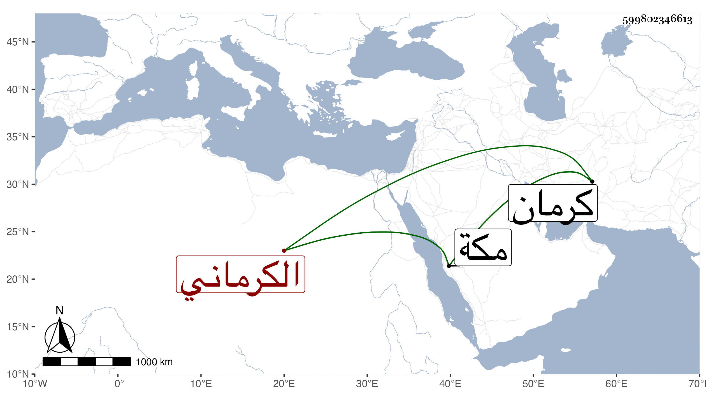

0902Sakhawi.DawLamic.ITO20230111-ara1.EIS1600.599802346613
Biography ID: 599802346613
الكرماني بكسر أوله قيل وفتحه نسبة لكرمان يشتمل على عدة بلاد والتقي يحيى بن الشمس محمد بن يوسف بن علي وآخوه عبد الحميد وابن أولهما الجمال يوسف وابناه التقي يحيى وأبو حيان كريم الدين والعلاء عبد الوهاب بن محمود بن محمد بن عمر نزيل مكة وأحد فضلائها ممن صاهر بها المحب الطبري الإمام على إحدى بناته وخادم قاوان نزيل مكة أيضا محمد بن أحمد بن محمد بن بهرام وملا علي الكيلاني .
